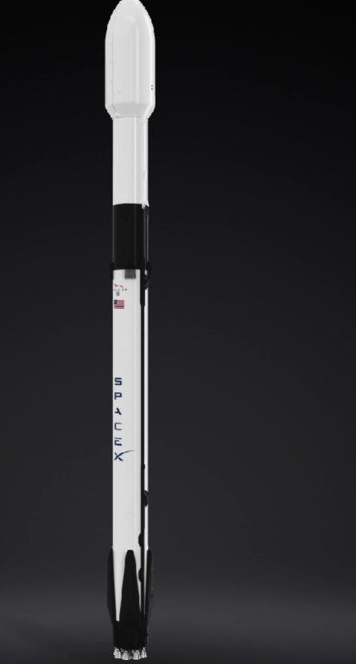

Cohete de dos etapas propulsado por oxígeno líquido y queroseno refinado (RP‑1), diseñado para el transporte confiable de satélites y tripulación a la órbita terrestre. Su primera etapa aterriza y vuelve a volar.

Protege la carga útil durante el ascenso atmosférico. Se separa en dos valvas a unos 3 minutos de vuelo y ambas se recuperan del mar para su reutilización.
Un único motor Merlin 1D Vacuum inserta la carga en su órbita final. Puede reencenderse varias veces para desplegar satélites en planos orbitales distintos.
Estructura de fibra de carbono que une ambas etapas y aloja el sistema de separación neumática. Cuatro aletas rejilla de titanio controlan el descenso del propulsor.
Nueve motores Merlin 1D en configuración octaweb. Tras la separación, la etapa reingresa, despliega cuatro patas de aterrizaje y toca tierra en plataforma marítima o en el sitio de lanzamiento.
Ciclo generador de gas con turbobomba, encendido por mezcla pirofórica (TEA‑TEB). Tres de los nueve motores se reencienden para frenar el descenso.
Versión optimizada para vacío con relación de expansión mayor. Sus reencendidos permiten órbitas de transferencia, circularización y desórbita controlada.
Corte de los nueve Merlin y separación neumática de la interetapa.
Encendido de retroceso con tres motores y control por aletas rejilla.
Segundo encendido para reducir cargas térmicas en la atmósfera densa.
Encendido final con un motor y despliegue de las cuatro patas de aterrizaje.